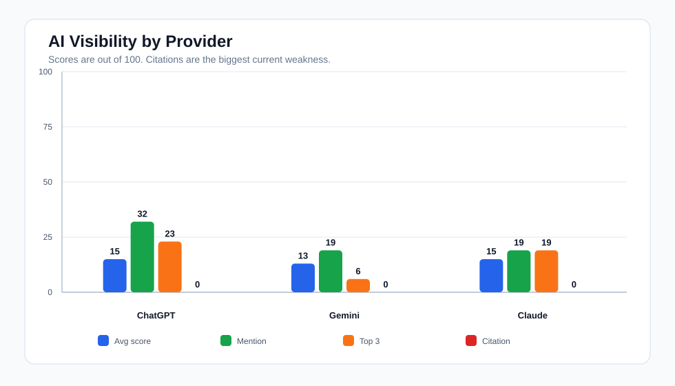
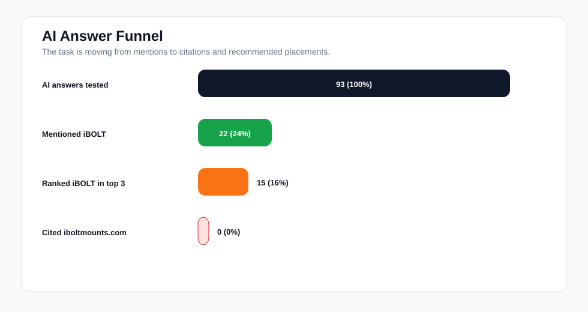
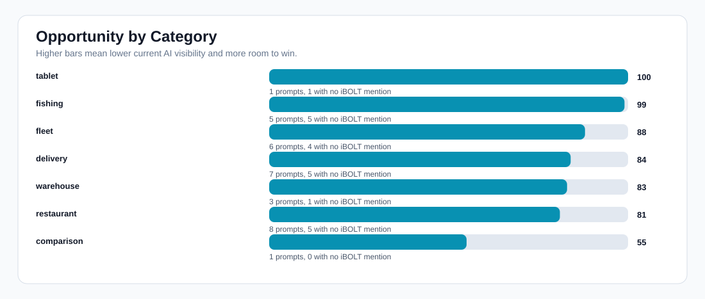
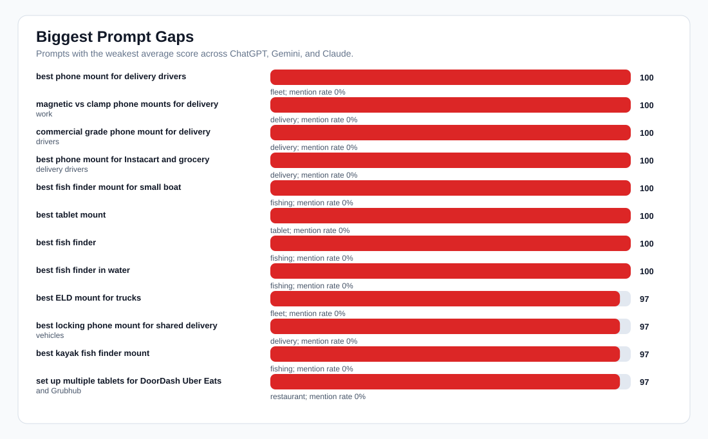
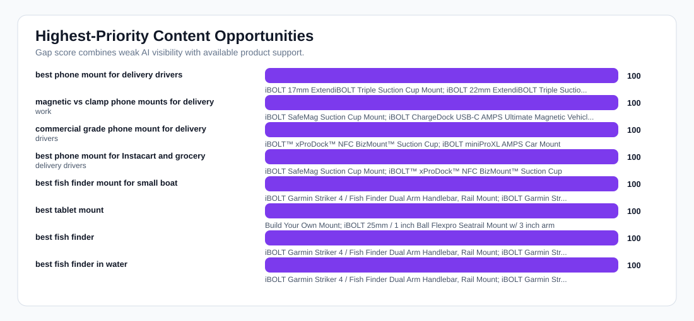

iBOLT AI Visibility Benchmark
Bottom line: iBOLT is visible in some branded and near-branded prompts, but broad buyer-intent prompts still have low recommendation coverage. The biggest near-term opportunity is building AI-citable pages that earn domain citations, because this run produced 0/93 citations to iboltmounts.com.
Charts





How To Read Citation Rate
Yes, citation rate matters, but this benchmark used normal consumer-style chat answers, and those models often respond without citations. A 0% citation rate means iBOLT is not yet being used as a cited source in these answers. The fix is not just more blog volume. We need citable solution pages, concise FAQs, product and organization schema, comparison tables, and stronger external mentions so search-grounded AI systems can confidently reference iboltmounts.com.
Recommended Content Push
| Target query | Recommended page/post | Products to support | Gap |
|---|---|---|---|
| best phone mount for delivery drivers | Best Phone Mount For Delivery Drivers (2026 Buyer's Guide) | iBOLT 17mm ExtendiBOLT Triple Suction Cup Mount; iBOLT 22mm ExtendiBOLT Triple Suction Cup Mount; iBOLT Metal 17mm ExtendiBOLT Triple Suction Cup Mount | 100 |
| magnetic vs clamp phone mounts for delivery work | Magnetic Vs Clamp Phone Mounts For Delivery Work: Which Option Fits Commercial Use? | iBOLT SafeMag Suction Cup Mount; iBOLT ChargeDock USB-C AMPS Ultimate Magnetic Vehicle Dock/Mount/Holder; iBOLT Phone Dock’n Lock 2" IncrediBOLT™ AMPS Drill Base Mount | 100 |
| commercial grade phone mount for delivery drivers | Commercial Grade Phone Mount For Delivery Drivers (2026 Buyer's Guide) | iBOLT™ xProDock™ NFC BizMount™ Suction Cup; iBOLT miniProXL AMPS Car Mount; iBOLT Phone Dock’n Lock IncrediBOLT™ AMPS w/ 4.25” Arm Locking Drill Base Mount for Smartphones | 100 |
| best phone mount for Instacart and grocery delivery drivers | Best Phone Mount For Instacart And Grocery Delivery Drivers (2026 Buyer's Guide) | iBOLT SafeMag Suction Cup Mount; iBOLT™ xProDock™ NFC BizMount™ Suction Cup; sPro2™ Windshield Dash and Vent Combo Kit | 100 |
| best fish finder mount for small boat | Best Fish Finder Mount For Small Boat (2026 Buyer's Guide) | iBOLT Garmin Striker 4 / Fish Finder Dual Arm Handlebar, Rail Mount; iBOLT Garmin Striker 4 / Fish Finder Handlebar, Rail Mount; iBOLT Garmin Striker 4 / Fish Finder IncrediBOLT™ 360 Clamp / Handlebar / Rail Mount | 100 |
| best tablet mount | Best Tablet Mount (2026 Buyer's Guide) | Build Your Own Mount; iBOLT 25mm / 1 inch Ball Flexpro Seatrail Mount w/ 3 inch arm; iBOLT 25mm/ 1-inch dualMag Industrial Strength Magnetic Base | 100 |